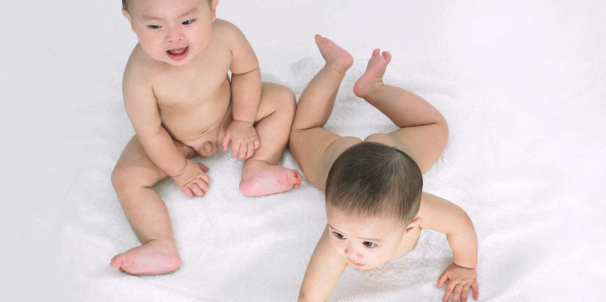

婴幼儿病症及处理
儿科
一、急性支气管炎
[病因]
婴幼儿体弱受各种病毒和细菌感染而发病。
[临床表现]
1、发病可急可缓。大多先有流涕、鼻塞、发热，咽痛等上呼吸道感染症状，也可忽然出现较多较深的干咳，以后渐有支气管分泌物，痰量逐渐增多，婴幼儿不会咳痰，多经咽部咽下。
2、一般症状或轻或重，轻者无明显病容，重者有中度发热，偶可高热，多2-3日即退。感觉疲劳，影响睡眠与食欲，甚至发生呕吐、腹泻、腹痛等消化道症状。年长儿可偶诉头痛与胸痛。
3、咳嗽一般延续7-10天，有时可迁延2-3周，甚至减轻后又复发，尤其在营养不良、先天性心脏病，佝偻病等患儿中易反复发作，如不经适当治疗可引起肺炎。
4、特殊类型的喘息性运气管炎。其特点是：发病年龄较小，继发于上呼吸道感染之后出现哮喘及呼气性呼吸困难，呈复发性。
5、24小时后，症状仍未见好转，就应该去医院就诊。
[治疗用药]
1、解热：38.5℃以上，可用解热镇痛药（儿童百服咛、儿童百服咛咀嚼片、对乙酰氨基酚、泰诺、布洛芬混悬液、美林、对乙酰氨基酚栓或退热贴）。38.5℃以下可服用中成药:板兰根冲剂、双黄连口服液、抗病毒口服液、小柴胡冲剂、清热解毒口服液、辅仁小儿清热宁颗粒。
2、抗生素类（β-内酰胺类、大环丙酯类、磺胺类），其中β-内酰胺类和磺胺类要注意询问有无过敏史，如有则不推荐使用。
3、化痰类：小儿化痰止咳颗粒、吉诺通胶囊（儿童装）、小儿止咳糖浆、小儿清肺止咳片、博士小儿止咳露（鲜果味）、小眉、右美沙分缓释混悬液、苑叶止咳糖浆（原名止咳枇杷露）、康童芬、小儿化痰止咳糖浆、小儿清热止咳口服液、小儿止咳露糖浆，复方桔梗枇杷、可诺赛，小儿清热止咳糖浆、佐今明百咳静糖浆儿童装、联邦止咳露（小儿）、小儿化痰止咳冲剂、小儿百部止咳糖浆、小儿佩夫人止咳水、海底椰露止咳合剂。
二、上呼吸道感染
[病因]
1、病原体（1）病毒。（2）细菌。
2、诱发因素（1）免疫功能低下。（2）疾病影响如麻疹、水痘、猩红热以及流行腮腺炎等。（3）环境因素。①不良卫生习惯。②气候骤变。
[临床表现]
1、三个月以下婴儿：发热轻微或无发热。鼻阻及鼻阻所致的症状较突出。如哭闹不安、张口呼吸、吸吮困难、拒奶；有时伴有呕吐及腹泻。
2、婴幼患儿表现：（1）全身症状较重，病初突然高热39.5-40℃，持续1-2天，个别达数日，部分患儿高热同时伴有惊厥；（2）一般鼻塞、流涕、咳嗽或咽痛等症状较重；（3）常伴有拒食、呕吐、腹泻或便秘等消化道症状；（4）体检除发现咽部充血外无其他异常体征。
3、三岁以上患儿多不发热或低热，个别亦有高热，伴畏寒、头痛、全身酸困、食欲减退；一般上呼吸道的其他症状明显，如鼻塞、流涕、喷嚏、声音嘶哑及咽炎等。部分患儿可合并脐周及右下腹疼痛，这种腹痛可能与肠蠕动增强、肠系膜林巴结炎及肠蛔虫骚动等有关。
[治疗用药]
1、发热：（1）38.5℃以上，可推荐服用解热镇痛药（儿童百服咛、儿童百服咛咀嚼片、泰诺、布洛芬混悬液、美林、对乙酰氨基酚栓或退热贴）。（2）38.5℃以下可服用中成药：板兰根冲剂、双黄连口服液、抗病毒口服液、小柴胡冲剂、清热解毒口服液、辅仁小儿清热宁颗粒。
2、抗生素类（β内酰胺类、大环内酯类、磺胺类），其中β内酰胺类和磺胺类要注意询问有无过敏史，如有则不推荐使用。
3、抗病毒药：新博林颗粒。
4、中成药：小儿咽炎冲剂、双黄连口服液、抗病毒口服液、板兰根冲剂。
三、小儿腹泻
[病因]
1、感染因素：分肠道内、外感染两方面。
2、饮食因素：喂养不当也可引起腹泻。
3、其他因素：环境条件如气候突然改变、营养不良、佝偻病及异常体质的小儿也是腹泻的常见因素。
[临床表现]
腹泻，严重时可造成脱水（眼窝凹陷、无眼泪、口舌干燥、口渴）。
[治疗用药]
1、抗生素类（β内酰胺类、大环内酯类、磺胺类），其中β内酰胺类和磺胺类要注意询问有无过敏史，如有则不推荐使用（泻痢停含磺胺）。
2、黄连素、思密达、肯特令、妈咪爱、金双歧、米雅BM片。
3、用口服补液盐（ORS）。
四、新生儿黄疸
[病因]
新生儿出生后，由于生理性细胞胞破坏过多、肝功能欠成熟等原因，可引起血液中胆红素的含量增加，出现黄闰现象。随着上述原因的逐渐消除，黄闰亦逐渐消退。这是一个生理过程。
[临床表现]
1、生理性黄疸，黄疸先见于面、颈部，然后遍及躯干和四肢，巩膜亦可有黄染。部分新生儿的口腔黏膜也可能轻度发黄。黄疸多为浅黄色。大都在出生后第2-3天出现，4-5天达高峰，以后逐渐减轻，14天内消退。
2、病理性黄疸可见于溶血病、败血症、胆汁淤积综合征，以及其他肛谢性疾病应立即就医：（1）生后24小时内出现黄疸。（2）足月儿皮肤发黄时间超过2周，早产儿皮肤发黄时间超过3周。（3）皮肤或巩膜黄染较深，或呈黄绿色，或连同足底皮肤也明显黄染。（4）生理性黄染消退后，又重新出现皮肤黄染。（5）在皮肤黄染期间，婴儿伴有拒奶、少哭、多睡、呕吐、腹泻、两眼凝视、尖声哭叫以及抽搐等异常情况。
[治疗用药]
仅适用于生理性黄疸可喂适量葡萄糖水帮助退黄。